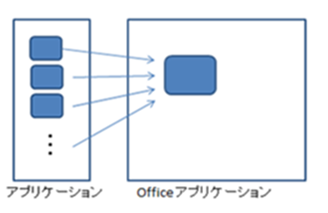
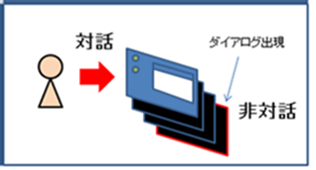

(※ 2014 年 4 月 11 日に Japan Office Developer Support Blog に公開した情報のアーカイブです。)
こんにちは、Office 開発系サポート 森 健吾 (kenmori) です。
今回の投稿では、Office サーバー サイド オートメーション (非対話型オートメーション) に対する正しい理解を持っていただくことを目的として記載いたします。
はじめに
結論からお伝えしますと Office のサーバー サイド オートメーション (非対話型オートメーション) を、マイクロソフトはサポートしておりません。
前提として、サーバーにインストールされた Office クライアント アプリケーションを使用したオートメーションを実施して、クライアント側の処理をサーバー側で集中して代行するなどの機能をライセンスを持たないエンドユーザーに提供した場合は、Microsoft 製品に対するライセンス違反にも該当する可能性があります。
また、技術的な観点からもこれらの実装は危険であるため、実装しないでください。
以下のサポート技術情報は詳細な内容が記載された文書ですが、この文書をもとに、サーバー サイド オートメーションがどのような実装なのか、なぜサポートされないかという点について解説させていただきます。
タイトル : Office のサーバーサイド オートメーションについて
アドレス : http://support.microsoft.com/kb/257757/ja
1. サーバー サイド オートメーションに該当する条件について
サーバー サイド オートメーションという名称を使っていますが、技術的に非対話型のセッションで起動されたクライアント アプリケーションからのオートメーションを総称してこう呼んでいます。つまり、サーバー上での実装に限定されず、通常のクライアント環境でこのような実装を行ったとしても、サポートされない実装に該当することになります。
以下のようなアプリケーションで実装した場合は、サポートされない実装に該当します。
・Web アプリケーション (CGI, ASP, ASP.NET を含む)
・分散アプリケーション (DCOM, ASMX Web サービス, WCF サービス)
・Windows サービス
上記に加え、非対話型に該当する状態として、以下のような状態があります。タスク スケジューラによる実行も十分に考慮する必要があります。
・プログラムの実行中にユーザーがパソコンの前にいない状態
・ユーザーがログオフした状態で実行される場合
・プログラムが対話的なログオン セッション以外で実行される場合 (参照 : 後述の前提情報 1)
Office オートメーションの実装は、PIA (Primary Interop Assemblies) を参照してコードを書くだけで簡単に実現できてしまいます。そのため、サーバー上でも動かしてみたいと考えてしまいがちですが、この文書を読んで思いとどまっていただければ幸いです。PIA を使用しなくても、Office は VC++ などのアンマネージ コードや VBScript、PowerShell など様々なプログラミング媒体から呼び出すことができますが、どの方法を使用してもサーバーサイド オートメーションにあたる呼び出しを行った場合はサポート対象外です。
(要件の例)
システム的なアプローチだとイメージが湧かない方のために補足させていただくと、以下のような機能を Office オートメーションで実装した場合が該当します。
・夜間にデータを集計しOffice ファイルを作成
・夜間に指定したファイルを自動印刷 (PC から印刷イメージ送信済みで、プリンタ側の機能などでスケジューリングしている場合は OK)
・Web ページ上でファイルを選択して印刷
2. サーバー サイド オートメーションによる問題について
具体的な内容を記載する前に、以下の前提情報を 2 点ご説明させていただきます。この 2 つの点について理解することで、サーバー サイド オートメーションをより正確に理解することが可能です。
前提情報 1 : 対話的なログオン セッションについて
パソコンを起動する時を想像してください。通常、ユーザーはパソコンを起動して、しばらくするとユーザー名とパスワードを入力してログオンします。その後デスクトップが表示される動作になります。簡潔に言いますと、このログオン セッションが対話的なログオン セッションとなります。このデスクトップで実行されたアプリケーションは、対話的なログオン セッション上で動作しているということになります。
では、Web アプリケーションなどのバックグラウンド サービスはどうでしょうか。これらのアプリケーションを起動した際にも非対話型のデスクトップが生成され、その中でアプリケーションが動作します。このようなアプリケーションから Office オートメーションを実施した場合、この非対話型のデスクトップ上で Office アプリケーションが動く結果となります。

念のため記載しますが、実行アカウントは関係ありません。対話操作が可能なユーザー (SYSTEM、LOCAL SERVICE、NETWORK SERVICE などのアカウント以外) で起動しても、バックグラウンド サービスで起動すれば、それだけで非対話セッションに該当します。
前提情報 2 : Office オートメーションの動きについて
前提として Office オートメーションとは、Office アプリケーションの処理を自動化するということになります。この点については、正しく理解して実装を検討する必要があります。
カスタム アプリケーション上で Office オブジェクトを生成して処理を実施した場合は、Office アプリケーションが起動し、Office アプリケーションに対してリモート プロシージャーコールによるプロセス間通信を確立し、処理命令とその結果がやり取りされる動作となります。
さらに、Office アプリケーションは Windows フォーム アプリケーションです。Windows フォーム アプリケーションはウィンドウの描画に携わる UI メイン スレッドを 1 つしか所持できません。
Office オートメーションで処理を実装する場合に気を付けるべき点として、クライアント側をいくら多重化したとしても、サーバー側の実行スレッドは常に 1 本で動作しているという点があります。
つまり、サーバー側でアクセスが集中した際に高いパフォーマンスを発揮することもできず、ビジーの際にはクライアントからの処理要求を拒否する事態に陥ることになります。

これらの制限に対する様々な誤解はありますが、上記 2 つの前提として記載した制限事項はどちらも Office アプリケーションを Windows フォーム アプリケーション以外のものに作り替えない限り、問題を克服することはできません。
解説 : サーバー サイド オートメーションの問題について
それでは、実際に問題について記載していきます。以下になぜサーバー サイド オートメーションが動作上サポートされないか、その主な理由をまとめます。
問題 1 : 非対話デスクトップで実行することの問題について
Office アプリケーションは、上述の通り Windows アプリケーションです。つまり、ユーザーが見える場所に描画されることを前提としています。
そのため、Office アプリケーションは、オートメーションによる処理を実行している場合においても、予期しない内部エラーが生じた場合や、メソッドの引数等が省略され動作を確認する際などに、ダイアログを表示してユーザーに操作を促す場合があります。

想像できる通り、裏で起動している上図のような非対話デスクトップにモーダル ダイアログが表示された場合、誰もクリックすることができません。Office オートメーションを使用したプログラムを実装する場合は対話的に操作することが前提となりますので、画面上に現れたダイアログに応じられないような状況下で動作させるべきではありません。
さらに、モーダル ダイアログというものは、一般的に UI メイン スレッドをスピンロックさせ、モーダルダイアログ以外のウィンドウやコントロールなどへの操作を無効化します。この状況下に陥った場合は、Office オートメーションで使用できる UI メインスレッドがハングした状況になり、それ以降の命令を一切受け付けることができなくなります。
プロセスを再起動し、再度アプリケーション インスタンスを起動することで回避は可能であるものの、このような不正な処理を実装している状況下においては、開いていた文書等が確実に復元できる保証はありません。
上述のような内容を考慮すると、問題に陥ることを実装面で工夫して最小限にすることはできても、問題が発生しないようにすることは不可能です。
(補足)
よくサーバーサイドで印刷をしたいというご要望を伺いますが、そもそも非対話セッションは描画をすることを想定していないセッションとなります。このため、このセッション上で印刷などの処理を実行した場合に、印刷イメージが正常に生成されることを保証できません。
問題 2 : ユーザー プロファイルについて
Office アプリケーションは、オートメーションによって起動された場合においても、実行時にはユーザー ID を使用します。該当ユーザーのプロファイルに基づき、HKEY_CURRENT_USER 配下のレジストリ キー設定や、該当ユーザー プロファイルが保持する Local Settings 等のファイルシステムを読み込んで操作します。
そのため、これらのプロファイルを持たないアカウント (例. SYSTEM や IWAM_[servername] アカウントなど) では、Office が適切な初期化に失敗する場合があります。
また、ユーザー プロファイルのロードはサーバー サイド処理におけるパフォーマンス劣化を招くとして、Windows Server 2008 以降で IIS から統合モードでアプリケーション プールを作成する場合などでは、バックグラウンド プロセスにおいてプロファイルを既定でロードしないよう設計されています。
タイトル : アプリケーション プール ID
アドレス : http://technet.microsoft.com/ja-jp/library/ee886292.aspx
参考箇所 : ユーザー プロファイル
上記の観点からもサーバー サイドでオートメーションを実行する場合は様々な問題があり、仮に動作できても安定性やパフォーマンスなど様々や面で問題があるということに至ります。
3. サーバー サイド オートメーションの代替案について
2014/05/07 更新
サーバーサイド オートメーションの代替案については、下記投稿に記載させていただきました。
移行をご検討いただく際には、ご参考にしていただけますと幸いです。
タイトル : Office サーバー サイド オートメーションの代替案について
アドレス : https://officesupportjp.github.io/blog/Office サーバー サイド オートメーションの代替案について/
結論
繰り返しになりますが、 Office のサーバー サイド オートメーションを、マイクロソフトはサポートしておりません。
実装には様々な危険性が伴い、マイクロソフトではこれらの実装によって生じた損害につきましては、責任を負うことができませんのでご理解ください。
本情報の内容 (添付文書、リンク先などを含む) は、作成日時点でのものであり、予告なく変更される場合があります。